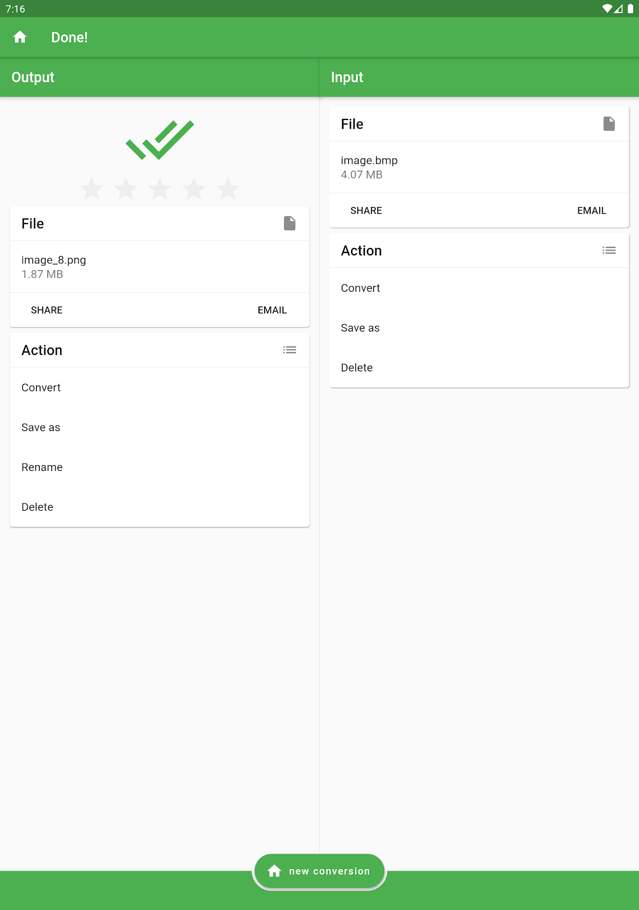
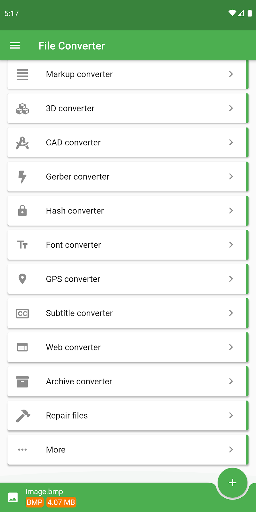

用了这么久 File Converter，这五个隐藏功能我猜你没碰过
File Converter 远不止"选文件选格式点开始"那么简单——历史记录跨转换复用来路文件、侧栏藏着的概念方案、RAW 降噪自动开、3D 模型云端渲染预览、多源合并批量操作，这些冷门入口一个比一个好用。
你以为file converter官网上那个 File Converter 就是个"文件拖进去、选个格式、点一下就完事"的工具？我之前也是这么想的——当初从官方下载装完就没再细看设置。直到某天深夜翻侧栏菜单，越翻越不对劲——这玩意儿藏得真深，好几个入口官方都不宣传，但用起来能把转换效率翻几倍。今天把压箱底的五个冷门路数掏出来，看看你撞见几个。
历史记录里藏着的"跨转换复用"
所有人都知道侧栏汉堡菜单能打开历史记录。但你有没有试过：刚把一个 PDF 转成了 Word，现在又想把同一个 PDF 转成 PNG——你是不是又去文件管理器里找那个 PDF，重新打开 File Converter 再走一遍选择流程？
别傻了。侧栏 → 已转换 → 找到那个 PDF→DOCX 的记录 → 点 Action → Convert → 直接选图像转换器 → PNG。同一个源文件，不需要重新选。它会自动把原文件挂上去，你只管挑新格式就行。

这个功能藏在"已转换"列表每一条记录的 Action 菜单里，官方文档只字片语提了一句"可以用同一个源文件继续转换"，没说怎么用。但实测太香了——尤其是批量素材处理的场景：一堆 PDF，先转 DOCX 做编辑，再转 PNG 做封面，不用来回找文件。
顺带说一下侧栏另外两个历史区域："忙"显示正在跑的任务，每条带进度百分比和转换方式图标（云图标 = 云端、手机图标 = 离线），后台被杀了也能回来继续等；"失败的"会把所有挂掉的任务按原因分类（网络问题、文件受保护、格式不支持、存储空间不足），点进去看详细错误，修完直接重试。
侧栏"概念"——你的一键转换方案库
这个词翻译得有点怪，原文是 Concepts。侧栏菜单里它夹在"已转换"和"设定值"之间，绝大多数人看到都跳过了。
"概念"其实就是自定义转换方案。你可以把一套常用的「源格式 → 目标格式 + 参数」组合存下来，下次一键调用。比如我经常把 RAW 照片批量转 JPG，固定质量 92、边长缩到 2560px、自动降噪开——存成一个方案，每次选文件 → 点这个方案 → 直接开始，不用每次都进 Settings 调。
概念方案可以重命名、可以置顶、可以在收藏夹里直接用。侧栏入口藏得深，所以这个功能用的人很少，但你一旦建了三四个常用方案，再也回不去逐个参数调的日子。
3D 模型云端渲染——不装 Blender 也能看效果
这个我也是偶然发现的。手机上一个 STL 文件，本来想转 OBJ 给朋友，结果看到 3D 转换器的目标列表最下面有个"图像"选项。
试了一下：选 STL 文件 → 3D 转换器 → PNG → 开始。几秒钟后，File Converter 在云端帮你渲染出一张等轴测视角的等轴测图，直接能看模型效果。不用装 Blender，不用开电脑，手机上就能预览 3D 模型长啥样。

3D 转换器本身藏在主界面分类列表里——往下翻，在 Hash、字体、GPS 这些小众分类中间。支持的格式覆盖面比想象中大：STL、OBJ、FBX、STEP、IGES、DAE……连压缩过的 STEPZ 都认。而且 Settings 里能调简化等级和目标面数——高模几十万面减到几千面做预览图，秒出。
存储路径改之前，记得先清空旧历史
这个不算功能，算踩过的坑。File Converter 默认把转换结果存在应用专属目录里，手机内置存储。用久了想改到 SD 卡省空间，对吧？
直接去侧栏 → 设定值 → 找到存储路径 → 改成 SD 卡。看起来一切正常。但你会发现：之前的历史记录里的旧文件，不会自动迁过去。而且有些版本甚至出现过"历史记录还能看，但点 SHARE 找不到文件"的情况。
file converter文档在存储路径那一节用小字提醒了一句，我当时没看见，结果翻了十分钟旧记录才明白怎么回事。正确姿势：改路径之前，先在"已转换"里把要留的结果 SHARE 到别处，然后侧栏有没有清空按钮清一次（不同版本这个按钮位置不一样，有的在"已转换"列表顶部），再改路径，改完干净。
搜索框——其实是个全局速查
右上角那个放大镜图标，大多数人以为就是搜一下有没有某个转换器。但它不止于此。
搜索结果会列出匹配的格式名称，而且每条结果都能直接：添加到收藏夹、或者立刻开始转换。比如你记得有个 Gerber PCB 格式能转，但忘了在哪个分类——搜"gerber"或者"pcb"，直接跳过去。甚至可以在搜索框里输入格式全名（比如 .fbx），直接进入 3D 转换器对应的目标格式页。
全局搜索还能帮你发现那些你可能根本没注意到的转换器类别：Gerber 转换器（PCB 板）、GPS 转换器（轨迹格式互转）、字幕转换器、哈希转换器（MD5/SHA 生成）……这些小众类别平时在分类列表里排得靠后，很容易被忽略。一个搜索框，比往下翻三十行分类高效多了。
最后：说说我对 File Converter 的看法
说实话，File Converter 不是那种"改变世界"的工具，但它把一件事做透了——几乎所有常见文件格式的互相转换，在手机上就能搞定。从专业相机的 RAW 照片到 3D 打印的 STL 模型，从电子书格式到 CAD 工程文件，覆盖面远超同类。
但它的界面设计是典型的"功能堆砌型"——分类列表二十多个，侧栏菜单层层嵌套，新用户很容易被吓到。真正好用的功能，往往藏在你不会点进去的角落。比如那个"概念"方案库，用起来比任何同类应用的预设功能都顺手，但入口就是个不太显眼的侧栏菜单项。
如果你也在用 File Converter，不妨今天花十分钟翻一遍侧栏每一个菜单、主界面每一个分类。我敢说至少能挖出一两个你之前完全没注意到的小惊喜。对了，我把整理过的格式对照表和分类说明同步到了三个仓库——GitHub、Gitee 和 GitCode 上都能找到同一份。